library(data.table) # Efficient data manipulation
library(HMDHFDplus) # Handle Mortality and HFDplus data
library(dplyr) # Data manipulation and transformation
library(ggplot2) # Elegant plotting
library(forecast) # Time series forecasting
library(car) # Companion to Applied Regression
library(mgcv) # Generalized additive models
library(itsadug) # Time series analysis and decompositionGeneralized Additive Forecasting Mortality
Abstract
This study introduces a novel Generalized Additive Mixed Model (GAMM) for mortality modelling, employing mortality covariates \(k_{t}\) and \(k_{ct}\) as proposed by Dastranj-Kolář (DK-LME). The GAMM effectively predicts age-specific death rates (ASDRs) in both single and multi-population contexts. Empirical evaluations using data from the Human Mortality Database (HMD) demonstrate the model’s exceptional performance in accurately capturing observed mortality rates. In the DK-LME model, the relationship between log ASDRs, and \(k_{t}\) did not provide a perfect fit. Our study shows that the GAMM addresses this limitation. Additionally, as discussed in the DK-LME model, ASDRs represent longitudinal data. The GAMM offers a suitable alternative to the DK-LME model for modelling and forecasting mortality rates. We will compare the forecast accuracy of the GAMM with both the DK-LME and Li-Lee models in multi-population scenarios, as well as with the Lee-Carter models in single population scenarios. Comparative analyses highlight the GAMM’s superior sample fitting and out-of-sample forecasting performance, positioning it as a promising tool for mortality modelling and forecasting.
Keywords: Longitudinal data analysis, Nonparametric modelling, Smoothing functions, Restricted maximum likelihood, Random walks with drift.
For more details, refer to the related paper: Generalized Additive Forecasting Mortality:
https://doi.org/10.48550/arXiv.2311.18698
Affiliation
Department of Mathematics and Statistics, Masaryk University, Kotlářská 2, 611 37 Brno, Czech Republic
Load packages
First, load necessary libraries
Dataset Import
Importing downloaded datasets from the Human Mortality Database (HMD) website
# List of Dataset Filenames
mylist <- c("AUT.Deaths_5x1.txt", "AUT.Exposures_5x1.txt",
"CZE.Deaths_5x1.txt", "CZE.Exposures_5x1.txt")Mortality Data Processing and Rate Calculation for AUT and CZE
# Function to read HMD data and filter based on Year and Age
read_and_filter_data <- function(file_index) {
data <- data.table::data.table(HMDHFDplus::readHMD(mylist[file_index]))
data[1961 <= Year & Year <= 2019 & 0 <= Age & Age <= 100]
}
# Process female and male mortality data for datdx and datex
datdx <- lapply(c(1, 3), function(i) list(
Female = read_and_filter_data(i)$Female,
Male = read_and_filter_data(i)$Male)
)
datex <- lapply(c(2, 4), function(i) list(
Female = read_and_filter_data(i)$Female,
Male = read_and_filter_data(i)$Male)
)
# Calculate ratios of datdx to datex for both female and male
dat <- lapply(1:2, function(i) {
list(
Female = matrix(datdx[[i]]$Female / datex[[i]]$Female,
59, 22, byrow = TRUE),
Male = matrix(datdx[[i]]$Male / datex[[i]]$Male,
59, 22, byrow = TRUE)
)
})
# Unpack matrices for AUT
AUT_Female <- dat[[1]]$Female
AUT_Male <- dat[[1]]$Male
# Unpack matrices for CZE
CZE_Female <- dat[[2]]$Female
CZE_Male <- dat[[2]]$Male
M0 <- list(AUT_Female, AUT_Male,
CZE_Female, CZE_Male)Construction of ASDRs DataFrame for Training Set
# Log-transformed Mortality Data Subset for Training
# Extract the first 50 rows of log-transformed mortality
# data for AUT and CZE females and males
M <- lapply(M0, function(mat) log(mat[1:50,]))
# Combine matrices column-wise to create a new matrix MB
MB <- do.call(cbind, M)
# Calculate row means of the MB matrix
l <- rowMeans(MB)
# Replicate row means to create a vector k1, matching the
# dimensions of the training set
k1 <- rep(l, times = 88)
# Create a new vector 'k2' by squaring each element in 'k1'
k2 <- k1^2
# Define a function to process each pair of matrices
process_matrices <- function(matrix1, matrix2, columns1, columns2, times1, times2)
{
result1 <- rep(rowMeans(cbind(matrix1[, columns1], matrix2[, columns1])),
times = times1)
result2 <- rep(rowMeans(cbind(matrix1[, columns2], matrix2[, columns2])),
times = times2)
return(rep(c(result1, result2), 2))
}
# Initialize an empty list 'kcList' to store individual elements of kc
kcList <- list()
# Iterate through pairs of matrices in M
for (i in seq(1, length(M), by = 2)) {
# Extract matrices corresponding to the pairs
matrix1 <- M[[i]]
matrix2 <- M[[i + 1]]
# Process matrices and append to kcList
kcList <- c(kcList, process_matrices(matrix1, matrix2, 1:10, 11:22, 10, 12))
}
# Combine all elements in kcList into a single vector 'kc1'
kc1 <- unlist(kcList)
# Create a new vector 'kc2' by squaring each element in 'kc1'
kc2 <- kc1^2
# Initialize vectors for training set
year <- rep(1961:2010, times = 88)
age_levels <- factor(c(0, 1, seq(5, 100, by = 5)))
age <- rep(c(0, 1, seq(5, 100, by = 5)), each = 50, times = 4)
cohort <- year - age
# Initialize vectors for training set
gender_levels <- c("Female", "Male")
gender <- rep(gender_levels, each = 22 * 50, times = 2)
age_groups <- c("Group[0,40]", "Group[45,100]")
# Create a vector representing age groups for each observation
age_groups <- rep(c(rep(age_groups[1], 50 * 10), rep(age_groups[2], 50 * 12)), 4)
Country_levels <- c("AUT", "CZE")
Country <- rep(Country_levels, each = 44 * 50)
# Combine results into data frame for training set
ASDRs <- data.frame(k1, k2, kc1, kc2, cohort, y = as.vector(MB), age,
gender, Country, stringsAsFactors = FALSE)
# Convert factors to specified levels
ASDRs$age <- factor(ASDRs$age, levels = age_levels)
ASDRs$gender <- factor(ASDRs$gender, levels = gender_levels)
ASDRs$Country <- factor(ASDRs$Country, levels = Country_levels)
# Create interaction variables for grouping
ASDRs$Country_gender_age <- interaction(ASDRs$Country, ASDRs$gender, ASDRs$age)
ASDRs$gender_age <- interaction(ASDRs$gender, ASDRs$age) # Display the structure of the resulting data frame
str (ASDRs)'data.frame': 4400 obs. of 11 variables:
$ k1 : num -4.5 -4.47 -4.5 -4.54 -4.52 ...
$ k2 : num 20.3 20 20.2 20.6 20.4 ...
$ kc1 : num -6.46 -6.5 -6.5 -6.51 -6.55 ...
$ kc2 : num 41.8 42.2 42.2 42.3 42.9 ...
$ cohort : num 1961 1962 1963 1964 1965 ...
$ y : num -3.53 -3.51 -3.57 -3.66 -3.67 ...
$ age : Factor w/ 22 levels "0","1","5","10",..: 1 1 1 1 1 1 1 1 1 1 ...
$ gender : Factor w/ 2 levels "Female","Male": 1 1 1 1 1 1 1 1 1 1 ...
$ Country : Factor w/ 2 levels "AUT","CZE": 1 1 1 1 1 1 1 1 1 1 ...
$ Country_gender_age: Factor w/ 88 levels "AUT.Female.0",..: 1 1 1 1 1 1 1 1 1 1 ...
$ gender_age : Factor w/ 44 levels "Female.0","Male.0",..: 1 1 1 1 1 1 1 1 1 1 ...# Display the first 10 rows of the resulting data frame
head(ASDRs, 10) k1 k2 kc1 kc2 cohort y age gender Country
1 -4.502050 20.26846 -6.464022 41.78358 1961 -3.525682 0 Female AUT
2 -4.467448 19.95809 -6.495653 42.19351 1962 -3.511197 0 Female AUT
3 -4.498229 20.23407 -6.499591 42.24468 1963 -3.567012 0 Female AUT
4 -4.536020 20.57548 -6.506412 42.33340 1964 -3.663142 0 Female AUT
5 -4.519100 20.42227 -6.548114 42.87780 1965 -3.670532 0 Female AUT
6 -4.524642 20.47239 -6.524282 42.56625 1966 -3.713301 0 Female AUT
7 -4.504795 20.29318 -6.533959 42.69262 1967 -3.797139 0 Female AUT
8 -4.506762 20.31091 -6.572200 43.19381 1968 -3.793644 0 Female AUT
9 -4.483010 20.09738 -6.547301 42.86715 1969 -3.845562 0 Female AUT
10 -4.484632 20.11192 -6.548822 42.88707 1970 -3.825803 0 Female AUT
Country_gender_age gender_age
1 AUT.Female.0 Female.0
2 AUT.Female.0 Female.0
3 AUT.Female.0 Female.0
4 AUT.Female.0 Female.0
5 AUT.Female.0 Female.0
6 AUT.Female.0 Female.0
7 AUT.Female.0 Female.0
8 AUT.Female.0 Female.0
9 AUT.Female.0 Female.0
10 AUT.Female.0 Female.0Data Visualization
# Create a modified dataset for visualization
ASDRsnw <- ASDRs %>%
mutate(Age = age) %>%
mutate(year = as.numeric(as.character(year)))
# Create a ggplot visualizing ASDR trends over time, colored
# by age, and faceted by gender and Country
ggplot(ASDRsnw, aes(year, y, color = Age)) +
geom_point(size = 0.7) +
geom_line(linewidth = 0.5) +
facet_grid(gender ~ Country) +
xlab("Year") + ylab("ASDR (log)") +
theme(axis.text=element_blank(), axis.ticks=element_blank()) +
theme_bw() +
guides(color = guide_legend(override.aes = list(size =3))) +
theme(axis.text.x = element_text(angle=90, hjust=1)) 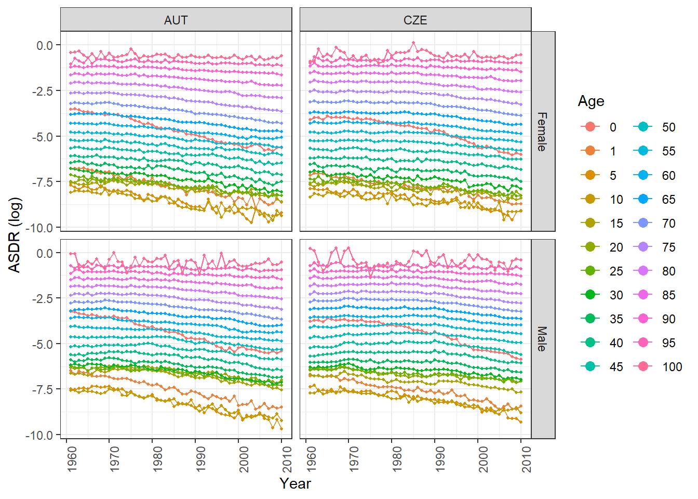
Plot of \(k_{t}\)
ggplot(ASDRsnw, aes(year, y, color = Age)) +
geom_point(size = 0.7) +
geom_point(aes(x = year, y = k1), color = "black", size = 1) +
geom_line(aes(x = year, y = k1), color = "black", linewidth = 0.7) +
xlab("Year") +
ylab("ASDR (log)") +
theme_bw() +
guides(color = guide_legend(override.aes = list(size = 5)))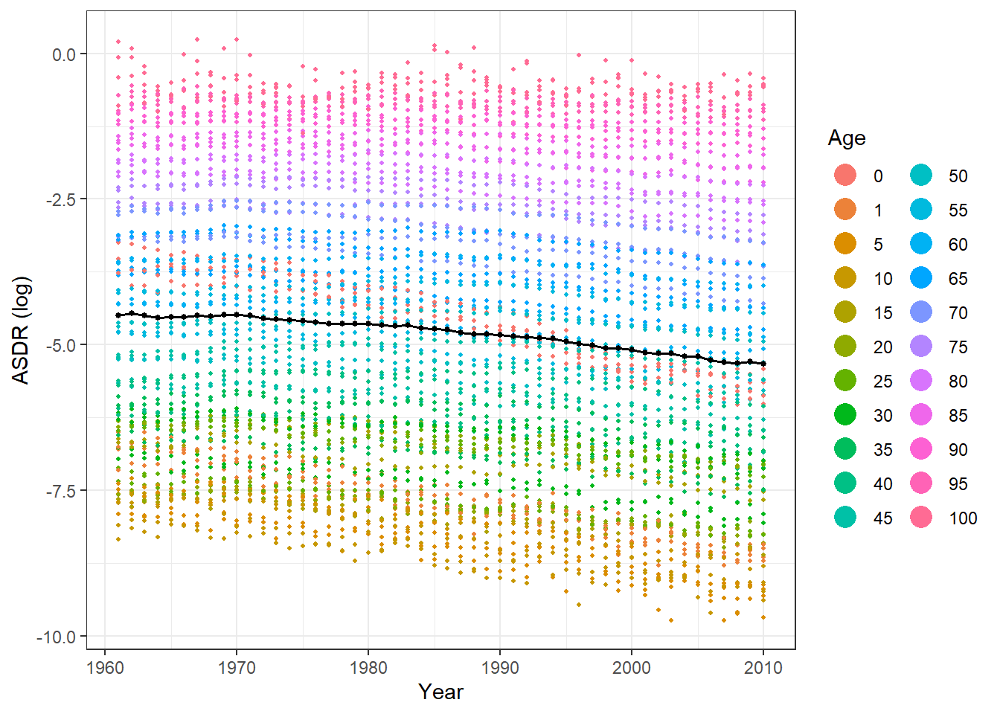
Plot of \(k_{ct}\)
ggplot(ASDRsnw, aes(year, y, color = Age)) +
geom_point(size = 0.3) +
geom_point(aes(x = year, y = kc1, color = age_groups), size = 0.6) +
geom_line(aes(x = year, y = kc1, color = age_groups), linewidth = 0.4) +
scale_color_manual(values = c("Group[0,40]" = "red", "Group[45,100]" = "blue")) +
xlab("Year") +
ylab("ASDR (log)") +
facet_grid(~Country) +
theme_bw() +
guides(color = guide_legend(override.aes = list(size = 3))) +
theme(axis.text.x = element_text(angle = 90, hjust = 1)) +
theme(legend.position = "bottom")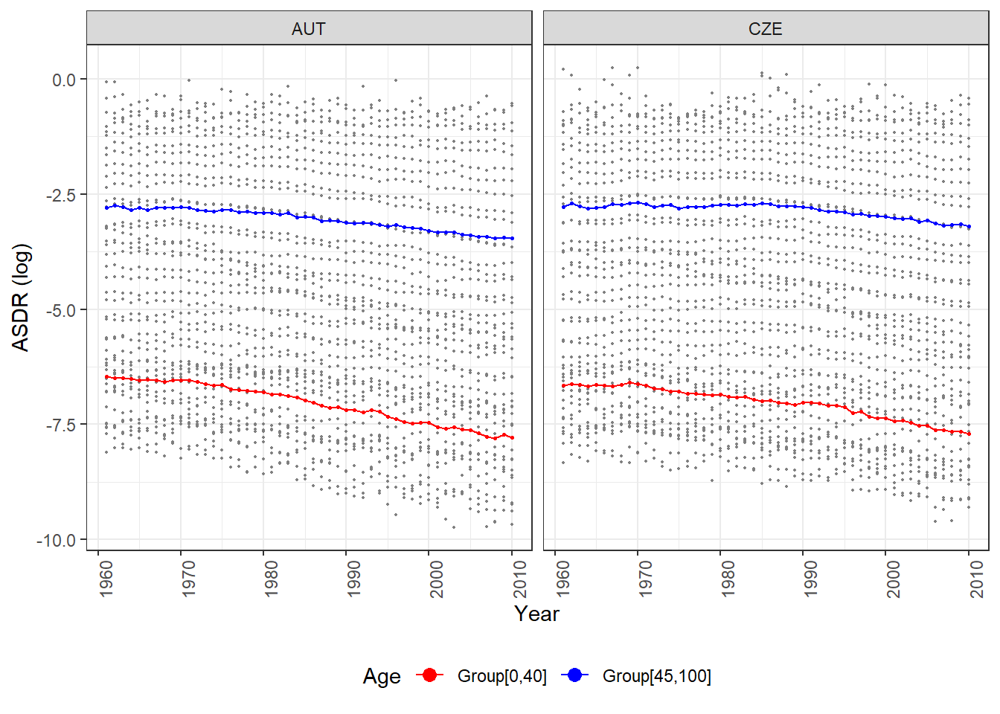
Fit a GAMM Using bam Function
# Fit a GAMM using bam function and measure the time taken
system.time({
m1 <- bam(y ~ age + gender_age +
# Intercept terms for age and gender-age interaction
s(kc1, bs = "ts") +
# Smooth term for kc1 using a thin-plate regression spline
s(kc1, by = gender_age, bs = "ts") +
# Smooth term for kc1 by gender-age interaction
s(cohort, bs = "ts") +
# Smooth term for cohort using a thin-plate regression spline
s(Country_gender_age, bs = "re") +
# Random effect for Country-gender-age interaction
s(k1, Country_gender_age, bs = "fs", m = 1) +
# Random factor smooth for k1 with Country-gender-age interactions
s(cohort, Country_gender_age, bs = "fs", m = 1),
# Random factor smooth for cohort with Country-gender-age interactions
data = ASDRs)
}) user system elapsed
394.25 11.20 461.86 Explanation
1. \(s(kc1, bs = "ts")\) : Smooth term for kc1 using a thin-plate regression spline
Mathematical Representation: \(f(kc1)\)
Represents a smooth term for kc1 using a thin-plate regression spline.
2. \(s(kc1, by = gender:age, bs = "ts")\) : Smooth term for kc1 by gender:age interaction
Represents a smooth term for kc1 by gender-age interaction, allowing different smooth curves for kc1 based on the combinations of gender and age. The smoothness is imposed on each combination independently.
3. \(s(k1, Country:gender:age, bs = "fs", m = 1)\) : Random factor smooth interaction for k1 with Country:gender:age interaction
Represents a random factor smooth interaction for k1 with Country-gender-age interaction using a factor-smooth basis (“fs”). This allows a common smoothness constraint across different levels of Country, gender, and age. This implies a random smooth effect for k1 shared across different levels of Country, gender, and age.
4. \(s(cohort, Country:gender:age, bs = "fs", m = 1)\) : Random factor smooth interaction for cohort with Country:gender:age interactions
Represents a random factor smooth interaction for cohort with Country-gender-age interactions using a factor smooth basis (“fs”). This implies a random smooth effect for the cohort variable shared across different levels of Country, gender, and age.
# Plot the autocorrelation function (ACF) of the model residuals
acf_resid(m1)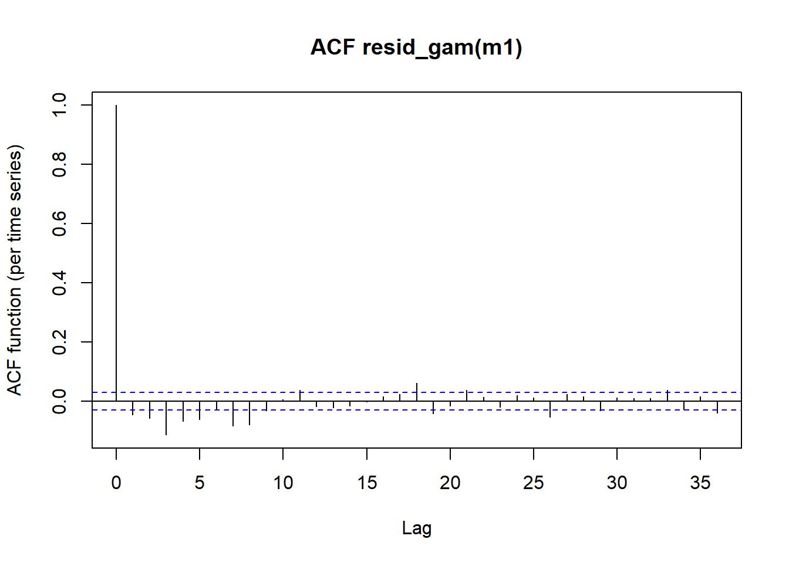
Check for Heteroskedasticity and Assess Normality
# Add fitted values and residuals to the ASDRs data frame
ASDRs$fit <- fitted(m1)
ASDRs$res <- resid(m1)
# Scatter plot to check for heteroskedasticity
plot(ASDRs$fit, ASDRs$res,
main = "GAMM for the 4 Populations",
xlab = "Fitted Values", ylab = "Residuals",
pch = 1, frame = FALSE, cex = 0.5, col = "black"
)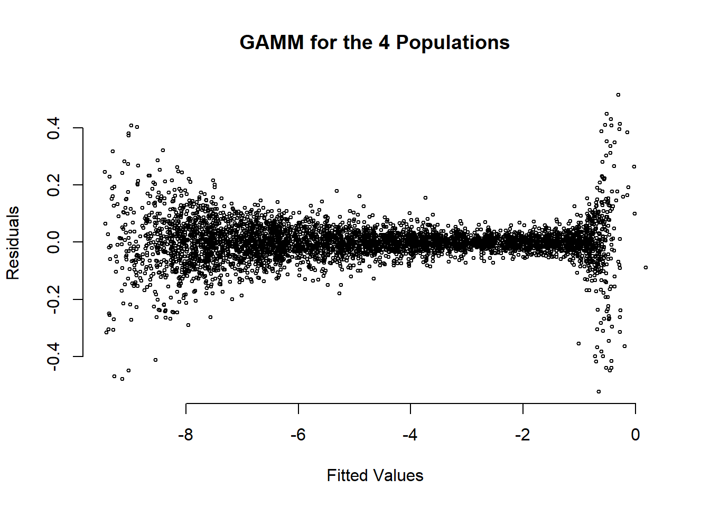
# Quantile-quantile plot to assess normality assumption
qqPlot(ASDRs$res,
ylab = deparse(substitute())
)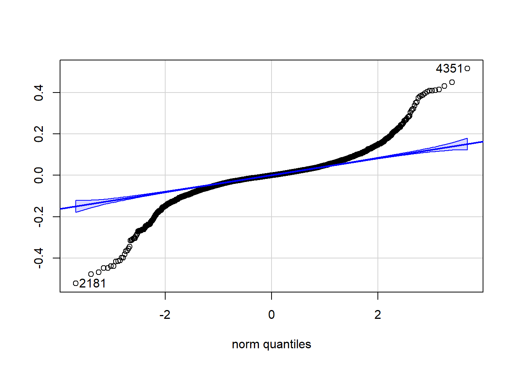
[1] 2181 4351Refine the Model
# Filter out data points with absolute residuals outside the range [-0.07, 0.07]
ASDRs2 <- ASDRs[abs(ASDRs$res) <= 0.07, ]
# Fit a GAMM to the refined dataset ASDRs2
system.time({
m2 <- bam(y ~ age+gender_age+
s(kc1,bs="ts")+
s(kc1,by=gender_age, bs="ts") +
s(cohort,bs="ts")+
s(Country_gender_age,bs="re") +
s(k1,Country_gender_age,bs="fs",m=1)+
s(cohort,Country_gender_age,bs="fs",m=1),
data=ASDRs2,
select = TRUE
# Enable selection penalties for smoother effects,
# allowing REML comparison of models
)
}) user system elapsed
454.65 12.03 528.98 Check for Heteroskedasticity and Assess Normality (Refined Model)
# Add fitted values and residuals to the ASDRs2 data frame
ASDRs2$fit <- fitted(m2)
ASDRs2$res <- resid(m2)
# Scatter plot to check for heteroskedasticity
plot(ASDRs2$fit, ASDRs2$res,
xlab = "Fitted Values", ylab = "Residuals",
pch = 1, frame = FALSE, cex = 0.09, col = "black"
)
# Quantile-quantile plot to assess normality assumption
qqPlot(ASDRs2$res,
ylab = deparse(substitute())
)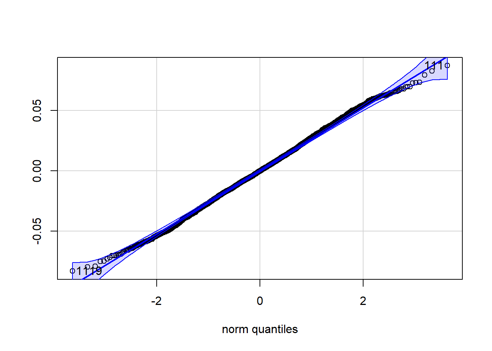
[1] 111 1119# Print summary statistics of the GAMM
print(summary(m2))
Family: gaussian
Link function: identity
Formula:
y ~ age + gender_age + s(kc1, bs = "ts") + s(kc1, by = gender_age,
bs = "ts") + s(cohort, bs = "ts") + s(Country_gender_age,
bs = "re") + s(k1, Country_gender_age, bs = "fs", m = 1) +
s(cohort, Country_gender_age, bs = "fs", m = 1)
Parametric coefficients:
Estimate Std. Error t value Pr(>|t|)
(Intercept) -1.543354 0.301630 -5.117 3.31e-07 ***
age1 -3.077195 0.397813 -7.735 1.42e-14 ***
age5 -4.486662 0.332882 -13.478 < 2e-16 ***
age10 -3.979338 0.377617 -10.538 < 2e-16 ***
age15 -3.486161 0.290903 -11.984 < 2e-16 ***
age20 -3.151064 0.289236 -10.894 < 2e-16 ***
age25 -3.029308 0.324161 -9.345 < 2e-16 ***
age30 -2.989491 0.286581 -10.432 < 2e-16 ***
age35 -2.720658 0.285910 -9.516 < 2e-16 ***
age40 -2.729674 0.357736 -7.630 3.16e-14 ***
age45 -5.694335 0.344039 -16.551 < 2e-16 ***
age50 -4.537635 0.343731 -13.201 < 2e-16 ***
age55 -4.030300 0.343651 -11.728 < 2e-16 ***
age60 -3.566703 0.343871 -10.372 < 2e-16 ***
age65 -3.877051 0.344372 -11.258 < 2e-16 ***
age70 -2.808841 0.345099 -8.139 5.86e-16 ***
age75 -2.780184 0.346130 -8.032 1.38e-15 ***
age80 -1.849454 0.347396 -5.324 1.09e-07 ***
age85 -1.578434 0.348834 -4.525 6.29e-06 ***
age90 -0.917206 0.358083 -2.561 0.010475 *
age95 -0.626256 0.355871 -1.760 0.078551 .
age100 1.159337 3.165969 0.366 0.714252
gender_ageMale.0 1.375182 2.474404 0.556 0.578416
gender_ageFemale.1 0.000000 0.000000 NaN NaN
gender_ageMale.1 0.339560 0.418167 0.812 0.416848
gender_ageFemale.5 0.000000 0.000000 NaN NaN
gender_ageMale.5 1.143994 0.398782 2.869 0.004151 **
gender_ageFemale.10 -0.678034 0.351784 -1.927 0.054026 .
gender_ageMale.10 0.000000 0.000000 NaN NaN
gender_ageFemale.15 -1.089046 0.215503 -5.054 4.61e-07 ***
gender_ageMale.15 0.000000 0.000000 NaN NaN
gender_ageFemale.20 -1.136416 0.094528 -12.022 < 2e-16 ***
gender_ageMale.20 0.000000 0.000000 NaN NaN
gender_ageFemale.25 -0.987734 0.221423 -4.461 8.48e-06 ***
gender_ageMale.25 0.000000 0.000000 NaN NaN
gender_ageFemale.30 -0.904790 0.200943 -4.503 6.98e-06 ***
gender_ageMale.30 0.000000 0.000000 NaN NaN
gender_ageFemale.35 -0.604116 0.062529 -9.661 < 2e-16 ***
gender_ageMale.35 0.000000 0.000000 NaN NaN
gender_ageFemale.40 -0.779184 0.336873 -2.313 0.020794 *
gender_ageMale.40 0.000000 0.000000 NaN NaN
gender_ageFemale.45 0.000000 0.000000 NaN NaN
gender_ageMale.45 0.619801 0.048487 12.783 < 2e-16 ***
gender_ageFemale.50 -0.571564 0.154525 -3.699 0.000221 ***
gender_ageMale.50 0.000000 0.000000 NaN NaN
gender_ageFemale.55 -0.809849 0.048847 -16.579 < 2e-16 ***
gender_ageMale.55 0.000000 0.000000 NaN NaN
gender_ageFemale.60 -0.778948 0.053805 -14.477 < 2e-16 ***
gender_ageMale.60 0.000000 0.000000 NaN NaN
gender_ageFemale.65 0.000000 0.000000 NaN NaN
gender_ageMale.65 0.692174 0.079251 8.734 < 2e-16 ***
gender_ageFemale.70 -0.574908 0.070085 -8.203 3.50e-16 ***
gender_ageMale.70 0.000000 0.000000 NaN NaN
gender_ageFemale.75 0.000000 0.000000 NaN NaN
gender_ageMale.75 0.376813 0.137231 2.746 0.006073 **
gender_ageFemale.80 -0.326683 0.091539 -3.569 0.000365 ***
gender_ageMale.80 0.000000 0.000000 NaN NaN
gender_ageFemale.85 0.000000 0.000000 NaN NaN
gender_ageMale.85 0.160520 0.155277 1.034 0.301333
gender_ageFemale.90 -0.103188 0.175105 -0.589 0.555714
gender_ageMale.90 0.000000 0.000000 NaN NaN
gender_ageFemale.95 0.000000 0.000000 NaN NaN
gender_ageMale.95 -0.003264 0.202707 -0.016 0.987154
gender_ageFemale.100 0.000000 0.000000 NaN NaN
gender_ageMale.100 3.207742 5.844574 0.549 0.583157
---
Signif. codes: 0 '***' 0.001 '**' 0.01 '*' 0.05 '.' 0.1 ' ' 1
Approximate significance of smooth terms:
edf Ref.df F p-value
s(kc1) 4.193e+00 9 115.234 < 2e-16 ***
s(kc1):gender_ageFemale.0 9.478e-01 9 0.944 2.78e-06 ***
s(kc1):gender_ageMale.0 3.948e+00 9 3.910 < 2e-16 ***
s(kc1):gender_ageFemale.1 9.752e-01 9 0.989 1.10e-06 ***
s(kc1):gender_ageMale.1 9.632e-01 9 1.076 7.78e-07 ***
s(kc1):gender_ageFemale.5 4.075e-01 9 0.074 0.04469 *
s(kc1):gender_ageMale.5 1.007e+00 9 1.626 < 2e-16 ***
s(kc1):gender_ageFemale.10 6.421e-01 9 0.187 0.00607 **
s(kc1):gender_ageMale.10 8.612e-01 9 0.555 5.42e-05 ***
s(kc1):gender_ageFemale.15 5.015e-01 9 0.106 0.02074 *
s(kc1):gender_ageMale.15 1.825e-05 9 0.000 0.42429
s(kc1):gender_ageFemale.20 1.870e-05 9 0.000 0.79114
s(kc1):gender_ageMale.20 2.034e-05 9 0.000 0.38221
s(kc1):gender_ageFemale.25 2.747e-01 9 0.042 0.07285 .
s(kc1):gender_ageMale.25 4.377e-01 9 0.085 0.04332 *
s(kc1):gender_ageFemale.30 5.285e-01 9 0.121 0.02490 *
s(kc1):gender_ageMale.30 2.962e-04 9 0.000 0.12172
s(kc1):gender_ageFemale.35 3.613e-04 9 0.000 0.13391
s(kc1):gender_ageMale.35 5.249e-05 9 0.000 0.19760
s(kc1):gender_ageFemale.40 9.071e-01 9 0.730 6.00e-05 ***
s(kc1):gender_ageMale.40 8.017e-01 9 0.378 0.00213 **
s(kc1):gender_ageFemale.45 1.397e-05 7 0.000 0.78753
s(kc1):gender_ageMale.45 2.154e-05 7 0.000 0.53495
s(kc1):gender_ageFemale.50 5.196e-01 7 0.153 0.05172 .
s(kc1):gender_ageMale.50 1.884e-05 7 0.000 0.84382
s(kc1):gender_ageFemale.55 1.435e-05 7 0.000 0.69966
s(kc1):gender_ageMale.55 4.078e-05 7 0.000 0.25546
s(kc1):gender_ageFemale.60 7.951e-05 7 0.000 0.21250
s(kc1):gender_ageMale.60 1.916e-05 7 0.000 0.77660
s(kc1):gender_ageFemale.65 1.795e-05 7 0.000 0.80744
s(kc1):gender_ageMale.65 6.785e-02 7 0.010 0.16405
s(kc1):gender_ageFemale.70 4.662e-04 7 0.000 0.18855
s(kc1):gender_ageMale.70 2.226e-05 7 0.000 0.56798
s(kc1):gender_ageFemale.75 1.821e-05 7 0.000 0.83326
s(kc1):gender_ageMale.75 3.398e-01 7 0.073 0.10163
s(kc1):gender_ageFemale.80 1.839e-05 7 0.000 0.91198
s(kc1):gender_ageMale.80 1.843e-05 7 0.000 0.92500
s(kc1):gender_ageFemale.85 3.395e-05 7 0.000 0.31362
s(kc1):gender_ageMale.85 3.657e-01 7 0.082 0.09613 .
s(kc1):gender_ageFemale.90 3.140e-01 7 0.065 0.10780
s(kc1):gender_ageMale.90 1.568e-01 7 0.027 0.14577
s(kc1):gender_ageFemale.95 5.884e-02 7 0.009 0.15918
s(kc1):gender_ageMale.95 5.211e-01 7 0.154 0.05173 .
s(kc1):gender_ageFemale.100 2.707e+00 9 3.438 < 2e-16 ***
s(kc1):gender_ageMale.100 2.882e+00 9 5.952 < 2e-16 ***
s(cohort) 7.357e+00 9 5.733 < 2e-16 ***
s(Country_gender_age) 2.141e+00 44 0.053 < 2e-16 ***
s(k1,Country_gender_age) 3.350e+02 748 1.087 < 2e-16 ***
s(cohort,Country_gender_age) 2.839e+02 747 3.154 < 2e-16 ***
---
Signif. codes: 0 '***' 0.001 '**' 0.01 '*' 0.05 '.' 0.1 ' ' 1
Rank: 2130/2151
R-sq.(adj) = 1 Deviance explained = 100%
fREML = -6203.1 Scale est. = 0.00090126 n = 3566# Create and display four plots based on the GAMM 'm2'
plot(m2, ylim = c(-0.6, 0.9), select = 24)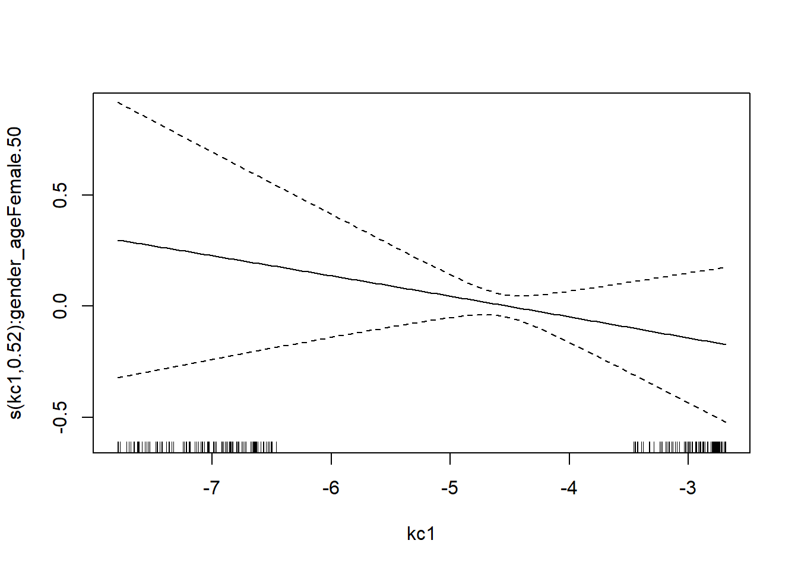
plot(m2, ylim = c(-0.6, 0.2), select = 46)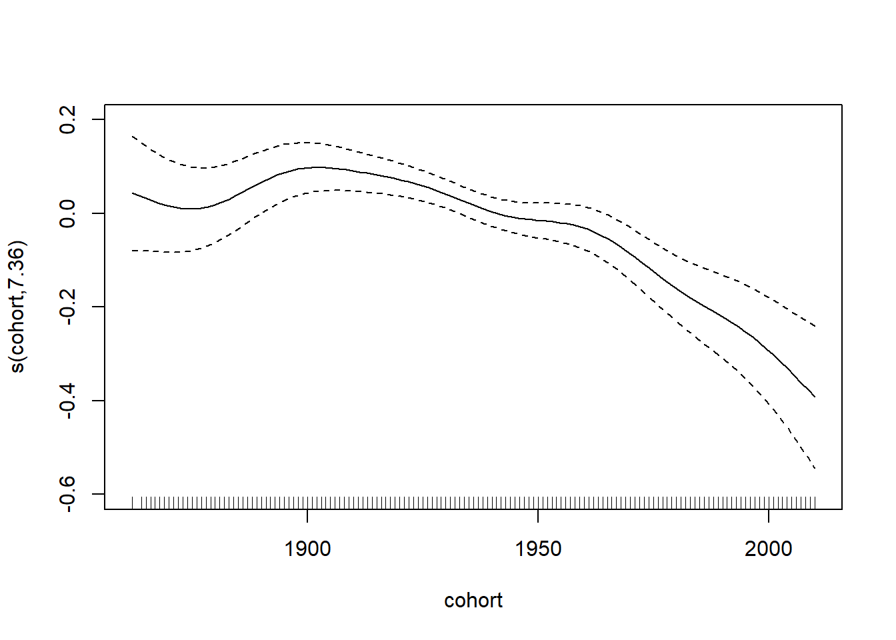
plot(m2, ylim = c(-0.094, 0.08), select = 48)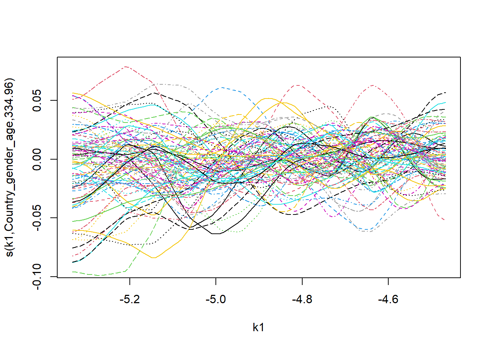
plot(m2, ylim = c(-0.64, 0.45), select = 49)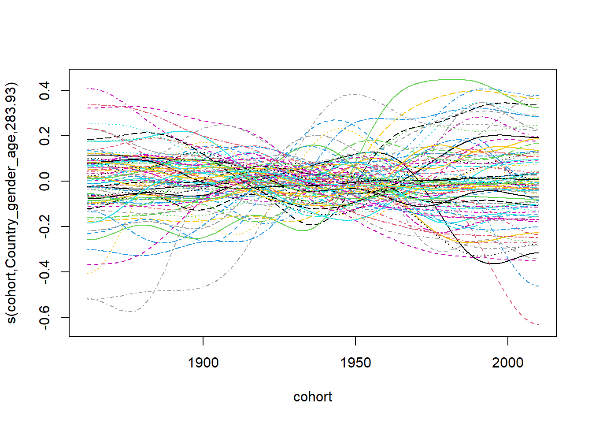
# Plot the autocorrelation function (ACF) of the model residuals
acf_resid(m2)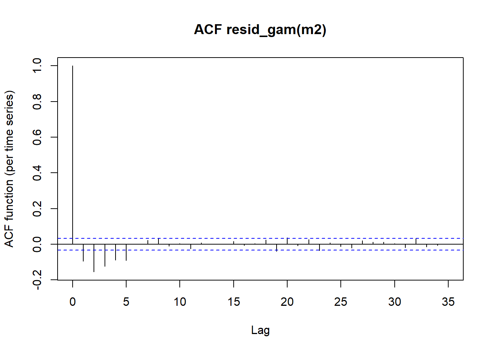
Building a New ASDRs DataFrame for the Test Set
# Use random walk with drift to forecast future values of k
k_forecast <- rwf(
l, # Time series data for forecasting
h = 9, # Forecast horizon (next 9 time points)
drift = TRUE, # Include a drift term in the random walk
level = c(80, 95) # Confidence levels for prediction intervals
)
# Repeat the mean forecast values 88 times
k1 <- rep(k_forecast$mean[1:9], times = 4*22)
# Create a new vector 'k2' by squaring each element in 'k1'
k2 <- k1^2
# Initialize an empty list 'kcList' to store individual elements of kc
kcList <- list()
# Iterate through pairs of matrices in M,
# combining and calculating row means for specific columns
for (i in c(1, 3)) {
matrix1 <- M[[i]]
matrix2 <- M[[i + 1]] # Adjust the index to access the second matrix
# Extract row means for the first 10 columns and append to 'kcList'
kcList <- c(kcList, rowMeans(cbind(matrix1[, 1:10], matrix2[, 1:10])))
# Extract row means for the last 14 columns and append to 'kcList'
kcList <- c(kcList, rowMeans(cbind(matrix1[, 11:22], matrix2[, 11:22])))
}
# Combine all elements in kcList into a single vector 'kc0'
kc0 <- unlist(kcList)
# Initialize an empty vector 'ar' for storing forecasted values
ar <- c()
# Iterate through 12 subsets of kc0 to forecast future values
# using random walk with drift
for (i in 1:4) {
# Extract a subset of kc0 for the current iteration
subset_kc0 <- kc0[((i - 1) * 50 + 1):(i * 50)]
# Forecast the next 9 values using random walk with drift
kc_forecast <- rwf(subset_kc0, h = 9, drift = TRUE, level = c(80, 95))
# Extract the mean values from the forecast and append to 'ar'
ar <- append(ar, kc_forecast$mean[1:9])
}
# Initialize an empty list 'kcList' for storing individual elements of kc
kcList <- list()
# Define the sequence of indices for iterating through 'ar'
indices <- seq(1, length(ar), by = 18)
# Iterate through the indices, combining and replicating blocks of 'ar'
for (i in indices) {
# Extract two consecutive blocks of 'ar'
ar1 <- ar[i:(i + 8)]
ar2 <- ar[(i + 9):(i + 17)]
# Replicate and combine the blocks according to the specified pattern
result1 <- rep(c(rep(ar1, 10), rep(ar2, 12)), 2)
# Append the result to 'kcList'
kcList <- c(kcList, result1)
}
# Combine all elements in kcList into a single vector 'kc1'
kc1 <- unlist(kcList)
# Create a new vector 'kc2' by squaring each element in 'kc1'
kc2 <- kc1^2
# Initialize vectors for test set
year <- rep(2011:2019, times = 88)
age_levels <- factor(c(0, 1, seq(5, 100, by = 5)))
age <- rep(c(0, 1, seq(5, 100, by = 5)), each = 9, times = 4)
cohort <- year - age
# Initialize vectors for test set
gender_levels <- c("Female", "Male")
gender <- rep(gender_levels, each = 22 * 9, times = 2)
Country_levels <- c("AUT", "CZE")
Country <- rep(Country_levels, each = 44 * 9)
# Combine results into data frame for test set
newASDRs <- data.frame(k1, k2, kc1, kc2, cohort, age,
gender, Country, stringsAsFactors = FALSE)
# Convert factors to specified levels
newASDRs$age <- factor(newASDRs$age, levels = age_levels)
newASDRs$gender <- factor(newASDRs$gender, levels = gender_levels)
newASDRs$Country <- factor(newASDRs$Country, levels = Country_levels)
newASDRs$Country_gender_age <- interaction(newASDRs$Country,
newASDRs$gender, newASDRs$age)
newASDRs$gender_age <- interaction(newASDRs$gender, newASDRs$age)
# Add predictions to the 'newASDRs' data frame using the GAMM 'm2'
newASDRs$pred <- predict(m2, newdata = newASDRs)Evaluating Forecast Accuracy: Mean Squared Error for GAMM Predictions (ASDRs)
# Compute Mean Squared Error (MSE) for GAMM Forecasting
# Initialize an empty vector to store MSE values
MSE_test_gamm <- numeric()
# Iterate through the 4 data sets of predictions
for (n in 1:4) {
# Extract predicted values for the specific
# set (9 years, 22 observations each)
gamm_predictions <- exp(
matrix(newASDRs$pred[(((n - 1) * (9 * 22)) + 1):(n * (9 * 22))],
9, 22, byrow = FALSE)
)
# Extract actual values for the corresponding set
actual_values <- M0[[n]][51:59,]
# Calculate the residuals (prediction errors)
gamm_errors <- actual_values - gamm_predictions
# Compute MSE for the set and append to the vector
MSE_test_gamm_n <- sum(gamm_errors[, 1:22]^2) / (22 * 9)
MSE_test_gamm <- c(MSE_test_gamm, MSE_test_gamm_n)
}
# Display the vector of MSE values for GAMM forecasting
MSE_test_gamm[1] 5.500247e-05 7.385705e-04 7.923831e-05 7.815464e-04